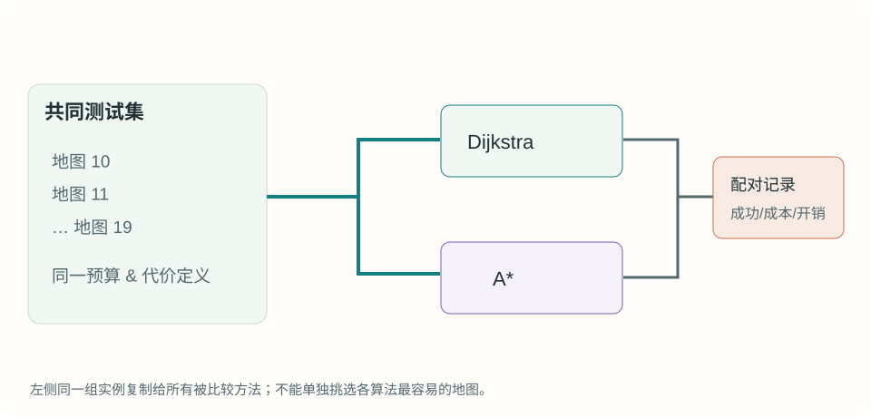
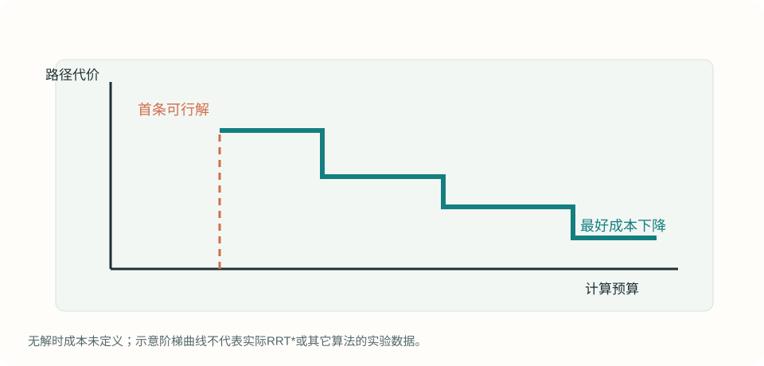

算法基准测试：一次漂亮的成功，为什么不能代表算法更好？
设计可复现的配对实验，分别报告成功率、解质量与计算资源；用十张固定地图的真正算法执行，识别删掉失败样本产生的偏差。
算法 A 找到路径用了 10 ms，算法 B 只用了 5 ms：结论成立吗？
若两次运行的地图不同、碰撞检查分辨率不同，或一个方法事先建图而另一个从零开始探索，那么一组时延数字并不足以比较算法。路径规划的基本结果至少有三部分：是否在预算内找到可行解、找到时解的代价、以及为得到它所用的资源。
更容易误导的一种结果是：从所有运行中删掉失败与超时，只展示成功运行的平均时间，最后把一个“经常失败但偶尔很快”的算法展示为最优。严谨基准必须完整保留这些失败。
REPRODUCIBLE BENCHMARKS / 24

一个公平实验由固定问题对、预算和随机种子开始
先冻结一组地图与起终点任务。两个规划器必须接受相同的障碍几何、机器人足迹、运动学模型、碰撞有效性定义和成本目标。对于随机采样规划器，还应采用多次运行和固定的种子集合；对于确定性图搜索，种子可以用于生成对照地图，保持每对地图相同。
在真实系统上也要固定 CPU/内存环境、线程数、算法版本、最近邻或碰撞加速结构、地图缓存策略及停止规则。预算可以是墙钟秒数、CPU 时间、碰撞检查调用或搜索展开次数，但不同的预算不应假装等价。
REPRODUCIBLE BENCHMARKS / 24

成功率、解质量、首次可行解和资源是不同随机变量
若在 N 次运行中有 S 次成功，成功率估计为 S/N。对于路径代价，可以给出“条件于成功”的均值、中位数、分位数和样本数，但绝不能将失败路径虚构成成本 0。对于 anytime 规划器，还应报告首次可行解时间与不同预算的 best-known cost。
当 S=0 时，成功样本成本均值未定义，不能显示为 0。对于有超时的运行，应记录右删失或超时上限；当只计算成功时间时，必须同时展示成功率和总尝试数。
失败应该进入每一个结论的上下文
失败可能来自真正不可达、算法超时、数值错误、内存不足或无效碰撞。它们都需要分别分类；把“在预算内未找到解”说成“这个场景不存在解”是不成立的。对求解成功率的比较，还可以采用配对分析或适当的置信区间；十张地图上的 60% 只是微型样例，不足以推导真实总体概率。
REPRODUCIBLE BENCHMARKS / 24

时钟读数公平，不代表碰撞和代码路径公平
真实计时应该明确：是否包含初始化、预处理、地图加载、GPU 冷启动、路径后处理和碰撞检查。PRM 的预处理可摊销到多次查询，单次 RRT 的建树不能用相同方式扣除。对 GPU、缓存和多线程，应分别记录初始化和稳态统计。
搜索展开数是一个易于复现的算法内部指标，但不同算法一次展开所做的工作可能差别巨大；尤其在高维规划中，一次碰撞检测的耗时可能比一次队列操作大很多。本章示例用展开数说明差异，不声称它代表真实运行秒数。
对 RRT* / anytime 搜索，最后一条路径不足以说明全部过程
一些算法会先快速找到一条可行路线，然后随着计算时间增加不断更新更低的路径成本。这时应记录 best-so-far cost(t) 曲线、首次可行解时刻、预算停止时的最终质量，以及在整个预算期间没有找到解的运行。
REPRODUCIBLE BENCHMARKS / 24

OMPL Benchmark支持记录规划时间、成功与进度属性，其日志可交给 Planner Arena分析。对实际论文级对比，应保留配置文件、版本、原始运行日志及绘图脚本，不能只分享一张排名柱状图。
交互：六次成功算 100%，还是十次尝试中的 60%？
同一组 10 次任务有 6 次成功、4 次失败。点击切换分母，观察为什么只保留成功样本会造成筛选偏差。正确的成功率分母应是全部预先指定的尝试次数。
正确口径：6 / 10 = 60%；4 次失败仍保留在记录中。
本章数据来自 10 张构造地图的真实 Python 搜索结果；切换分母只为解释统计陷阱。
可运行对照：十张相同地图比较 Dijkstra 与 A*
Python 3.10+，只依赖标准库。地图尺寸固定为 8×6，起点 (0,0)、目标 (7,5)，每张地图用确定种子随机放置障碍。种子 10–19 生成十张地图，不同种子使用两种预设障碍概率；Dijkstra 和 A* 在每张地图上完全共享障碍。搜索都采用四邻域单位边代价，A* 使用一致的曼哈顿启发式，因此成功时应返回与 Dijkstra 相同的最短路成本。
from random import Random
from heapq import heappush, heappop
from itertools import count
WIDTH, HEIGHT = 8, 6
START, GOAL = (0,0), (7,5)
SEEDS = tuple(range(10,20))
def make_map(seed, density):
rng = Random(seed)
return {(x,y) for x in range(WIDTH) for y in range(HEIGHT)
if (x,y) not in (START,GOAL)
and rng.random() < density}
def solve(blocked, algorithm):
serial = count()
heap = [(0,next(serial),0,START)]
best = {START:0}
expanded = 0
while heap:
_,_,cost,node = heappop(heap)
if cost != best[node]:
continue
expanded += 1
if node == GOAL:
return cost, expanded
x,y = node
for nxt in ((x+1,y),(x-1,y),(x,y+1),(x,y-1)):
if not (0 <= nxt[0] < WIDTH and 0 <= nxt[1] < HEIGHT):
continue
if nxt in blocked:
continue
candidate = cost+1
if candidate < best.get(nxt,float("inf")):
best[nxt] = candidate
h = (abs(nxt[0]-GOAL[0])+abs(nxt[1]-GOAL[1])
if algorithm == "A*" else 0)
heappush(heap,(candidate+h,next(serial),candidate,nxt))
return None, expanded
records = []
for seed in SEEDS:
density = .24 if seed % 2 == 0 else .34
blocked = make_map(seed,density)
d_cost,d_exp = solve(blocked,"Dijkstra")
a_cost,a_exp = solve(blocked,"A*")
assert a_cost == d_cost # Same problem and exact shortest cost.
records.append((seed,d_cost,d_exp,a_exp))
success = [row for row in records if row[1] is not None]
failures = len(records)-len(success)
assert len(success) == 6 and failures == 4
assert all(row[3] <= row[2] for row in records)
assert all(row[1] >= 12 for row in success)
print("paired maps:",len(records),
"solved:",len(success),"failed:",failures)
print("success rate for each algorithm:",len(success)/len(records))
print("expanded states, all cases:",
sum(row[2] for row in records),
sum(row[3] for row in records))
print("successful-case path cost:",
[row[1] for row in success])
print("Note: no wall-clock timing or robot benchmark here.")代码断言这十张样例里有六张找到路、四张失败；成功样本成本相同；只对这十张图的有效扩展数执行检查。它没有测量墙钟时间、没有随机重启，也不包含真实机器人或碰撞模型，因此不得把输出当作“Dijkstra 与 A* 的总体速度排名”。
将这个演示升级为可信的实验协议
- 公开地图生成器、地图文件、种子、起终点和失败归因。
- 明确规划器版本、硬件、运行模式、停机时间及缓存预热。
- 记录逐次成功/失败、首解时间、最终代价、碰撞检查调用和完整运行时间。
- 分场景难度展示指标分布，对每个汇总标注 N 和条件成功样本数量。
- 对参数选择使用与最终测试不同的验证集，避免调参后反过来只报告同一张地图上的最佳结果。
- 给出可执行脚本、原始 CSV/SQLite/JSON 日志和报告再生成方式。
地图级配对试验可以减少不同场景差异带来的统计波动，但它本身不能消除算法实现质量、代码语言、硬件和任务分布的系统性偏差。